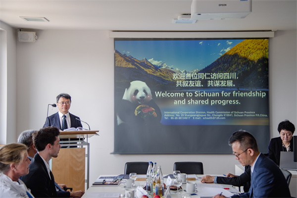

学院通知 · 教学通知
我院与德国弗莱堡大学牙医学院开展AR口腔数字化交流活动
发布时间：2026/07/09
2026年6月30日，四川省卫生健康委员会党组成员、副主任、机关党委书记张峰率团赴德国交流访问，我院副院长朱桂全教授随团参加，并与弗莱堡大学牙医学院共同举行AR口腔数字化交流活动，正式启动基于我院原创的AR口腔种植导航系统的临床研究和教育培训合作项目。弗莱堡大学医学中心副院长Rainer Schmelzeisen教授、牙医学院院长Katja Nelson教授等德方代表出席活动。 活动期间，朱桂全副院长介绍了华西口腔在学科建设、临床研究、医学教育及成果转化方面的进展，双方围绕AR口腔数字化临床研究、教学培训、手术导航应用等方向深入交流。现场还演示了增强现实口腔外科手术导航系统（TARS）的教学实操流程，展现了华西口腔在医工融合创新方面的持续探索。 弗莱堡大学牙医学院位居德国牙科学前列，在口腔颌面外科与数字化医学领域拥有重要国际影响力。此次合作将我院自主研发的AR导航系统及配套培训课程体系落地该中心，开展数字化口腔教学与临床研究合作，是推动中国原创数字化口腔技术走向国际的一次具体实践。未来，我院将继续深化数字化口腔技术创新与国际合作，为全球口腔医学领域的学术交流与技术共享提供更多华西方案。
